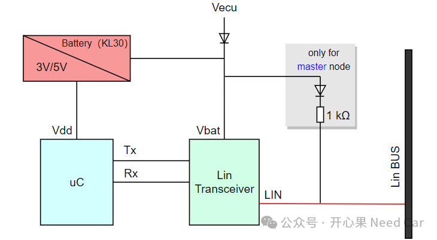
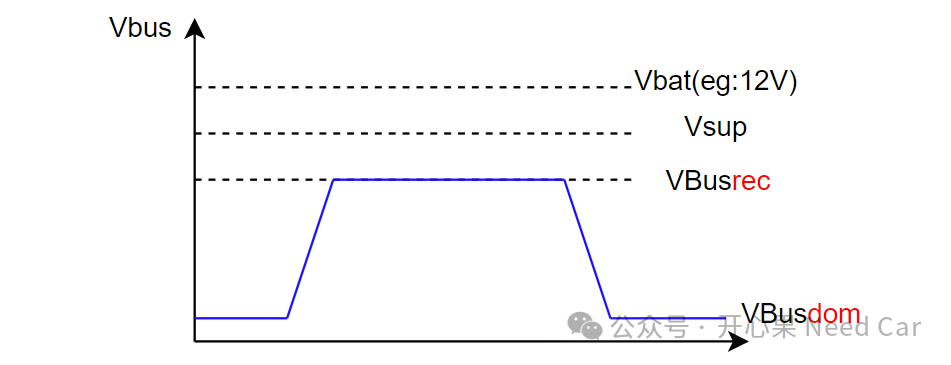
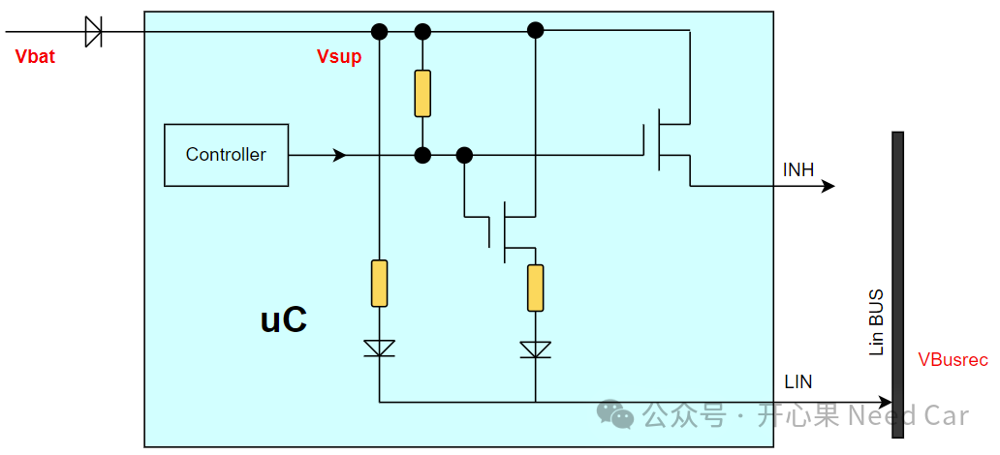
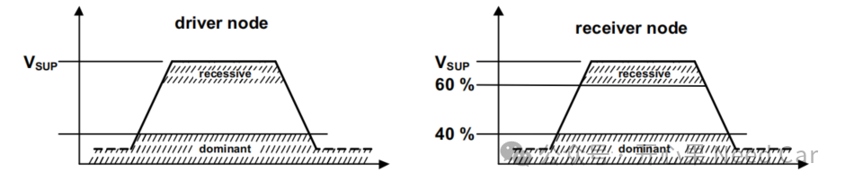
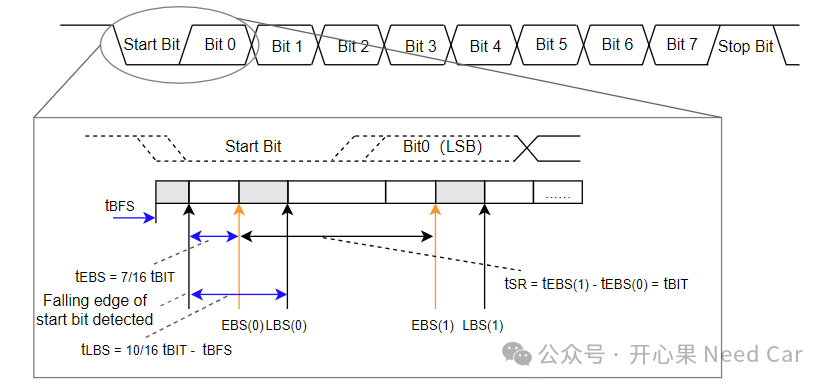
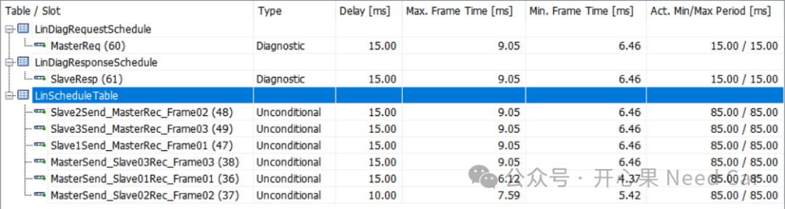
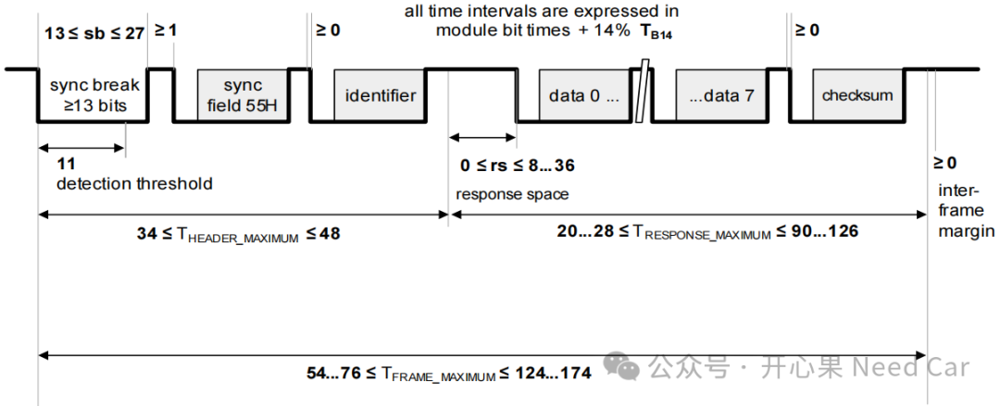
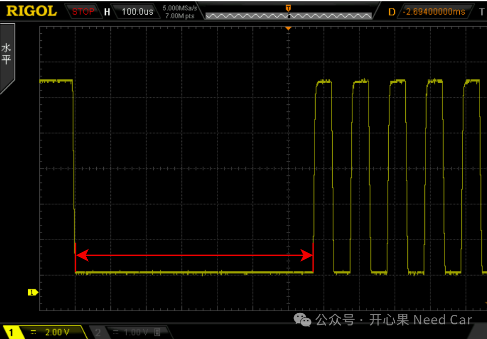
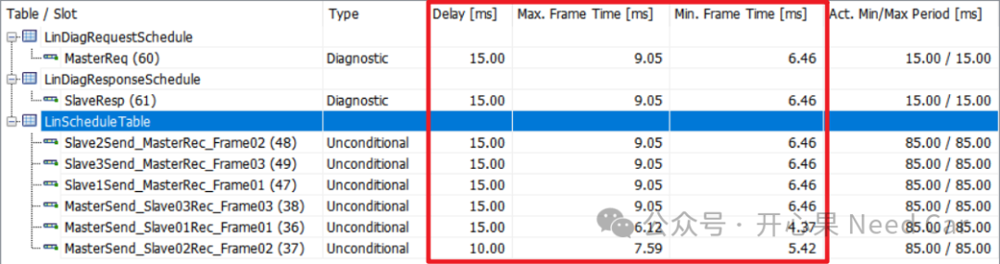

Lin总线，似乎总给人"不冷不热"的感觉，你说懂些Lin吧，但是，解决工程问题时，会觉得差点意思；你说不懂Lin吧，多多少少的还是听过或者知道点。所以，如果要踏踏实实的解决Lin总线问题，还需夯实基础。本文开始，结合工程，深入的讨论一下Lin。本文聚焦Lin的构成和时间参数。对于Lin总线，主要涉及的器件包括电源（Battery）、主芯片（uC）、Lin收发器等，示意如下：
发送数据时，uC产生的数字信号经过uC的TxD Pin发送到Lin Transceiver，Lin Transceiver经过处理，转换成模拟的电压信号，通过LIN线发送到Lin BUS；接收数据时，Lin BUS上的模拟信号（电压值）经过Lin Transceiver处理，转换成uC可识别的数字信号。对于Lin总线，接收或者发送的信息均由二进制的"0"（低电压）和"1"（高电压）表示，也就是我们常说的显性（dominant）和隐性（recessive），那么，如何理解显性和隐性呢？
（一）显性（dominant）和隐性（recessive）
我们知道，Lin总线是单线串行总线，以12 V供电系统为例，当LIN线为高电平时，为隐性位（recessive，"1"），当LIN线为低电平时，为显性位（dominant，"0"）。由于蓄电池输出的电压（Vbat），经过二极管、电阻的压降，实际在Lin总线监测到的电压会有所降低，示意如下：
为了便于理解Vbat、Vsup、VBusrec，本文以TJA1021收发器为例，示意收发器内部的部分电路：
在进行VBus信号采集时，显性和隐性的识别是一个范围，对于驱动节点（driver node）和接收节点（receiver node）的显性和隐性电压范围如下所示：

既然信息（每个bit）以0和1表示，那么，对应到物理层，如何才能有效采样0和1呢？在17987 - 4规范中给出了位（bit）时间计算约束：tSR = tEBS(n) - tEBS(n-1) = tLBS(n) - tLBS(n-1) = tBIT如何理解这个公式呢？示意如下：

按照规范解释，每个字节域同步（BFS，byte field synchronization）需要有一个精度tBFS。从下降沿延迟7/16 tBIT时间开始（tEBS），到tLBS为止，这个时间窗口采样，即：用这个时间窗口内采到的电压值表示0或者1。实际应用中，在这个时间窗口内可以采样1次或者3次获取bit值。其中，EBS（earliest bit sample）、LBS（latest bit sample）。（一）调度表
工程中看到的调度表，示意如下：

如上图，诊断报文（Diagnostic frames）和无条件帧（Unconditional frame）是最常用的两种报文，当然，两者也对应不同的调度表。其中，Delay表示一个Slot持续时间，Delay大小可以配置。注意：Delay必须是Tbase的整数倍（eg：Tbase = 5ms），同时，Delay＞Max.Frame+jitter。Period表示调度表的周期。Max.Frame和Min.Frame就是发送一帧Lin报文的时间上/下限。
当通信速率（eg：19200bps）确定以后，一帧Lin报文发送需要多长时间，取决于这帧报文所包含bit的个数。而每帧Lin报文所含bit的个数与Lin Controller的配置有关。对于TC3xx，一帧Lin报文的长度配置如下：
1、Tbit时间
当Lin的通信速率确定（eg：19200bps）以后，则一个bit所需时间确定：bit = 1 / Frq = 1 / 19200 * 1000 ≈ 0.052ms。
2、Theader_maximum
对于break field，按照协议约束，需要≥13 bit显性位+≥1个界定符（隐性位）。sync field（10 bit，1个Start bit+8bit数据+1个Stop bit）。PRID（Protedted Identifier）包含10bit。所以，在不考虑字节间隔（inter-byte space，即：0 bit）时，Theader_maximum最小为34 bit。而规范考虑了字节之间的间隔，并提出了增加40%余量，因此Theader_maximum最大为34 * （1+0.4） = 48 bit（取整数）。所以，
34 ≤ Theader_maximum ≤ 48就是这么来的。
配置break field占用13bit低电平，理论计算用时 = 1 /19200 * 13 * 1000 * 1000 us ≈677.08 us，实际测量结果如下：

同理，可以推算其他field时间，具体可以参考17987-3。理解了Frame时间的计算规则，咱们再返回来理解调度表中的Max.Frame和Min.Frame时间，示意如下：

Max.Frame和Min.Frame与发送数据量和每个域的时间配置参数有关。配置时间参数（eg：break field长度）在软件启动阶段，初始化时固定。而每个Frame的数据量不同，则Frame长短不同，以发送8 byte数据为例，Frame所需bit个数为124~174 bit，因此，Min.Frame = 1 / 19200 * 1000 * 124 ≈ 6.46ms，Max.Frame = 1 / 19200 * 1000 * 174 ≈ 9.06ms。
点击下方关注，一起聊聊Autosar/嵌入式，如果需要，联系作者进群，给你更专业的解答